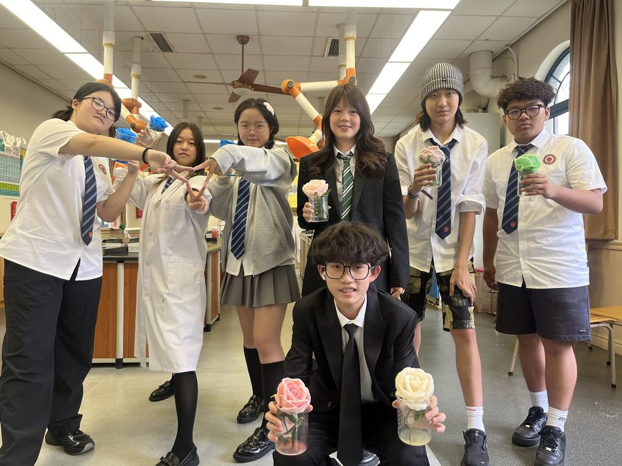
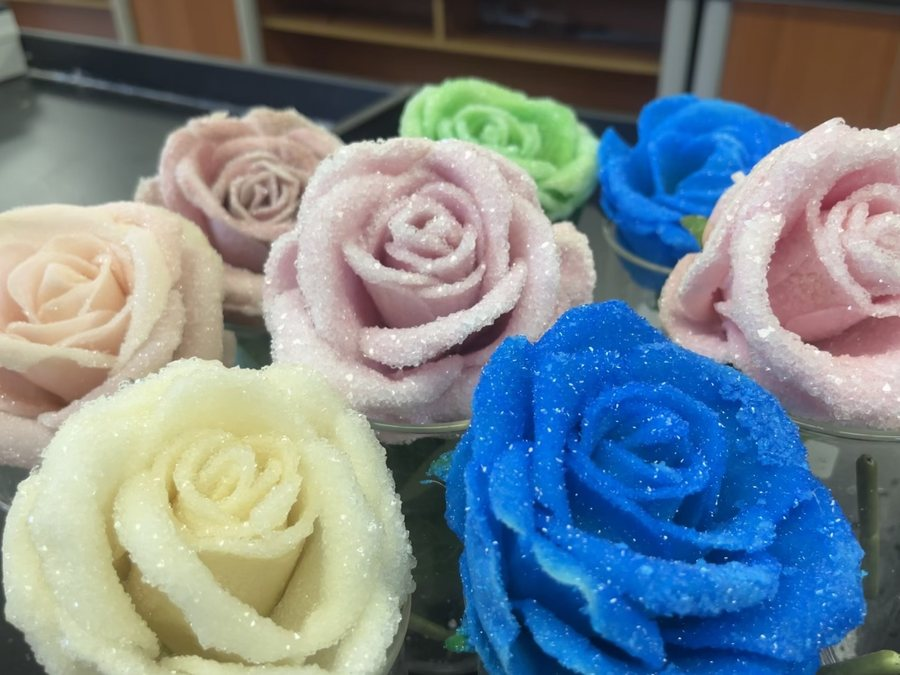
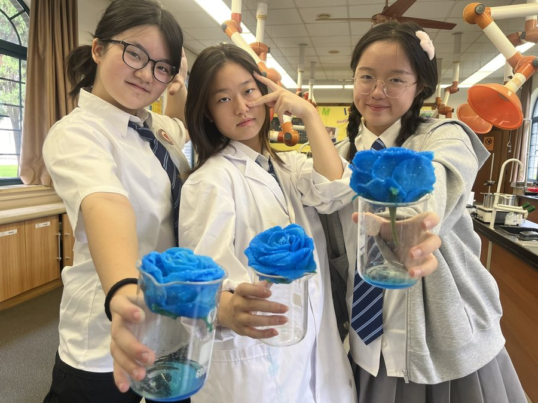
内驱L4 韧性2026-09-11
第一次做这个实验的时候，我们有很高的期待，然而结果很不理想。令人惊喜的是，学生们没有就此放弃，我们一起分析了失败的原因。第二次计划再做的时候，又遇到了实验室吹风机数量不足的问题，学生们主动提出了可以带自己的吹风机来，实验当天学生们共计带了6把吹风机来。“遇到困难想办法，而不是逃避”，很开心从你们身上看到了这种宝贵的品质。

成都康礼学校正式推出 「火花计划」（Cogdel Spark）：老师在日常教学与生活中随手记录孩子的闪光时刻，每一束「火花」都对应全人成长的某一个维度。这些被记录的瞬间，也正是每周与家长见面的成长周记的来源。
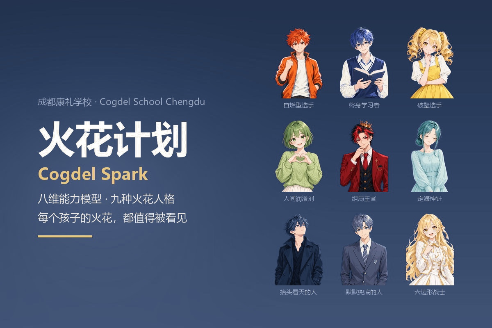
我们记录，不是为了打分——是为了让每个孩子知道：你的光，被看见了。
康礼以「全人教育」为核，把成长落在八个维度上。它不是一次考试的评价表，而是老师日常观察与记录的坐标系。
通过持续的自我觉察与调适，维持身心稳定与可靠运作，从而为长期价值实现奠定基础的能力。
主动构建并不断拓展自身知识框架，将知识与技能内化为系统性理解，并持续更新认知结构以适应变化的能力。
在深入理解既有框架的基础上，主动挑战并重构框架，洞察问题本质，并创造性地提出与实践新方法，从而实现突破性发展的能力。
基于对自身目标与价值的理解，自主启动并持续推进行动，通过自我反思与激励驱动持续成长的能力。
通过描绘共同方向、做出关键判断并激发他人潜能与行动，将个体能力放大为集体成果，从而引领团队达成目标的能力。
通过清晰沟通、换位思考与主动补位，建立信任并整合多方优势，降低内耗并提升整体效能的能力。
能够从不同视角与更广阔的时空维度理解问题，整合资源并预见趋势，从而拓展个人与组织能力边界的能力。
在追求成就的过程中，将自身决策与对他人及社会长期福祉的影响相连接，并在行动中纳入这些影响与责任，从而实现可持续发展的能力。
每个孩子，都是八维能力的独特组合。我们把这些「配方」，提炼成九种典型的火花人格：
自燃型 Self-Starter 终身学习者 Lifelong Learner 破壁选手 Rule-Breaker 人间润滑剂 The Glue 组局王者 The Decider 定海神针 The Anchor 抬头看天的人 The Stargazer 默默兜底的人 The Backbone 六边形战士 All-Rounder
我们把八维能力模型做成了一次轻松的互动测试：随机抽取 12 道生活与学习场景题，约 1 分钟完成，没有对错。测完会生成属于你的八维雷达图与火花人格卡片，可以直接保存分享。
想先了解火花计划是什么？查看火花计划介绍 ›
火花不是刻意准备的材料，而是老师在日常里真实看到的瞬间——比如孩子在物理课上测出 8 年来最接近真实值的重力加速度；一个曾经背单词总卡壳的孩子，这周听写考了 16/25；一个孩子午休时间也在图书馆安静自习，不需要任何人催促。
这些瞬间被记录下来、归入八个维度，最终成为家长每周看到的成长周记，也让孩子自己看到一个具体、可见的成长轨迹。
下面是几条来自校园的真实记录（已隐去学生姓名）。每条都标出它属于八维中的哪一维，以及目前所在的成长等级：L1 依赖 · L2 循规 · L3 自化 · L4 韧性 · L5 感召。



第一次做这个实验的时候，我们有很高的期待，然而结果很不理想。令人惊喜的是，学生们没有就此放弃，我们一起分析了失败的原因。第二次计划再做的时候，又遇到了实验室吹风机数量不足的问题，学生们主动提出了可以带自己的吹风机来，实验当天学生们共计带了6把吹风机来。“遇到困难想办法，而不是逃避”，很开心从你们身上看到了这种宝贵的品质。
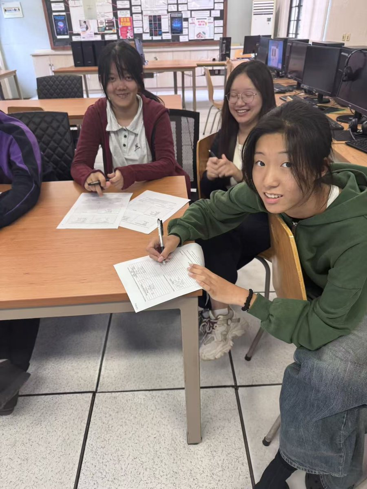
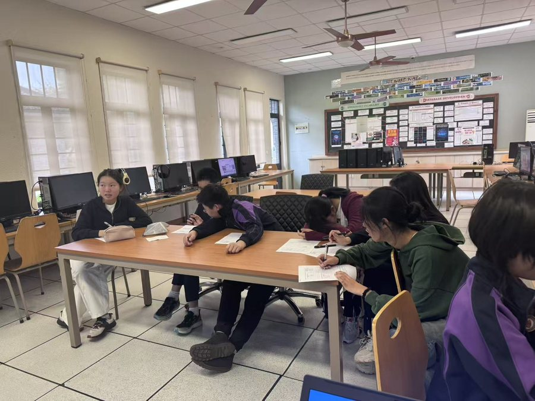
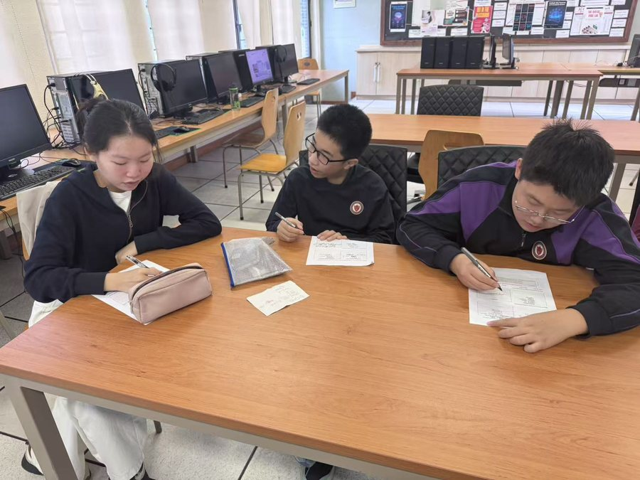
在我们的计算机科学课上，学生们接触到了各种各样的智能设备及其实际应用。通过这节课，他们更好地理解了这些技术如何在日常生活中使用，以及它们为何重要。所有学生都非常投入和热情地完成练习册，展现出积极参与和强烈的学习意愿。他们深思熟虑的回答和活跃的参与营造了积极而富有成效的课堂氛围。做得好！
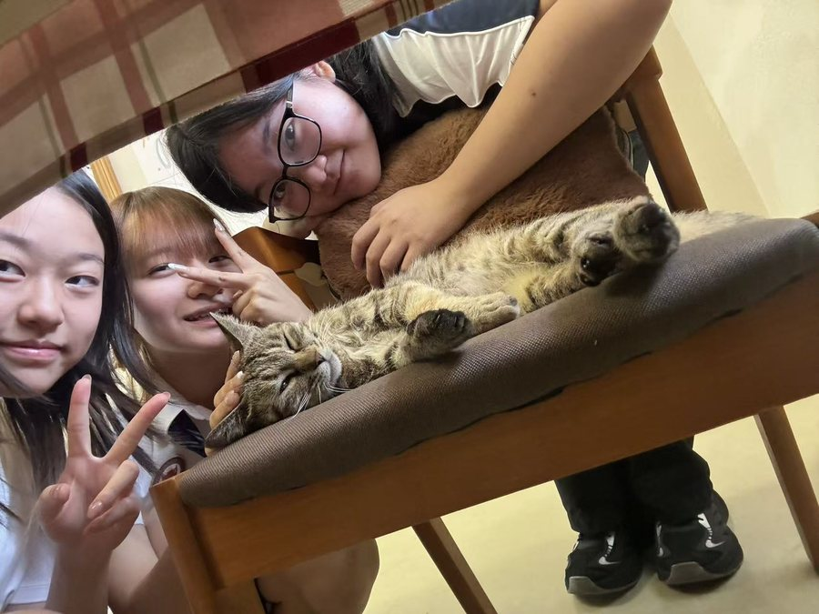
学生在和猫咪的相处中，学会爱，学会保护比自己更弱小的生物，学会这个地球是所有生物的家园，也明白一个生物的养育过程是需要付出和辛苦的。
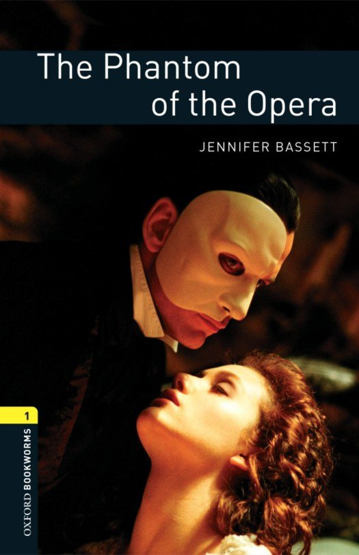
我们从今晚开始进行英文小说的阅读，一位同学主动加入了英文读书俱乐部，并且在我们今天第一次的阅读过程中，充当了小老师，其他同学不懂的单词他都主动帮助同学解答，并且积极地参与故事的讨论。点赞！
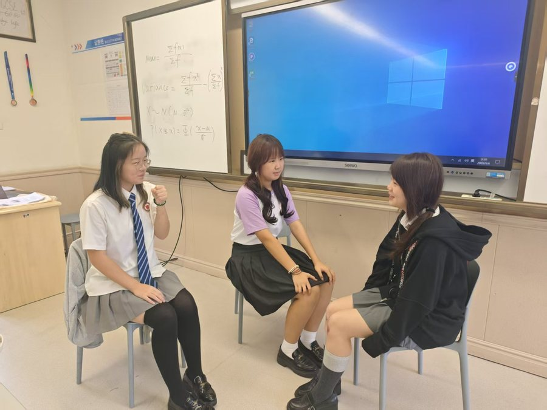
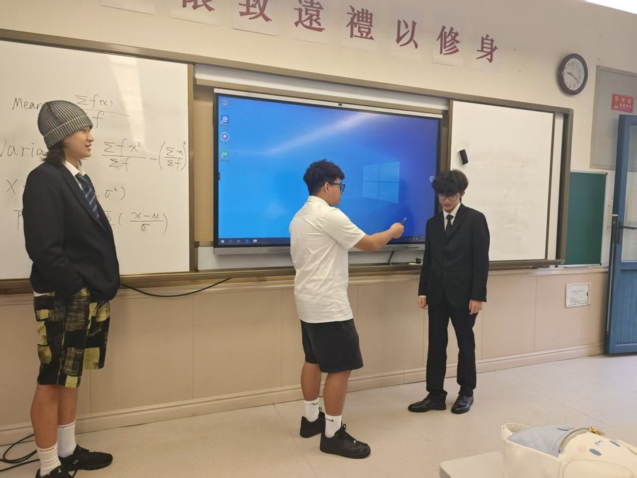
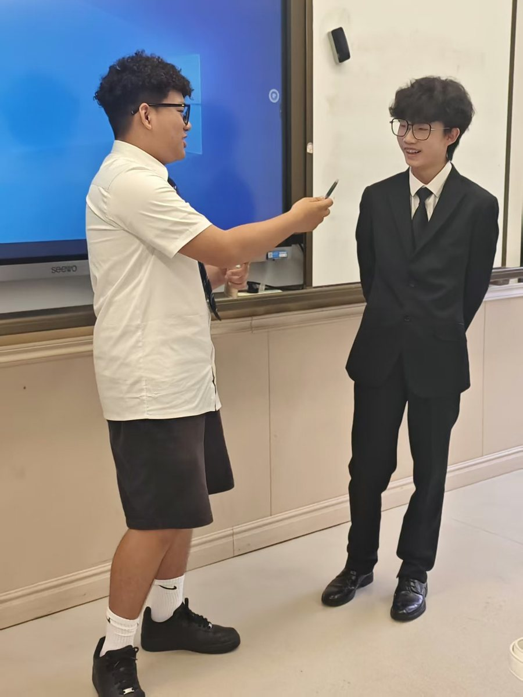
中文口语课上，IG的同学们分组进行了关于《我的生活》的采访对谈。每个组的采访风格各有不同。第一组同学主要在探究个人生活娱乐方式的不同; 第二组的对谈更具有人文关怀，除了生活日常，也会提出生活或学习过程中会遇到什么困难。第三组同学的选题则有些出乎意料，是多年以后他们各自的生活。采访氛围活跃，想象力十足。虽然从采访用语、主题深度等方面，同学们还有所欠缺，但在有限的准备时间内，大家还是呈现出了各自的风采！
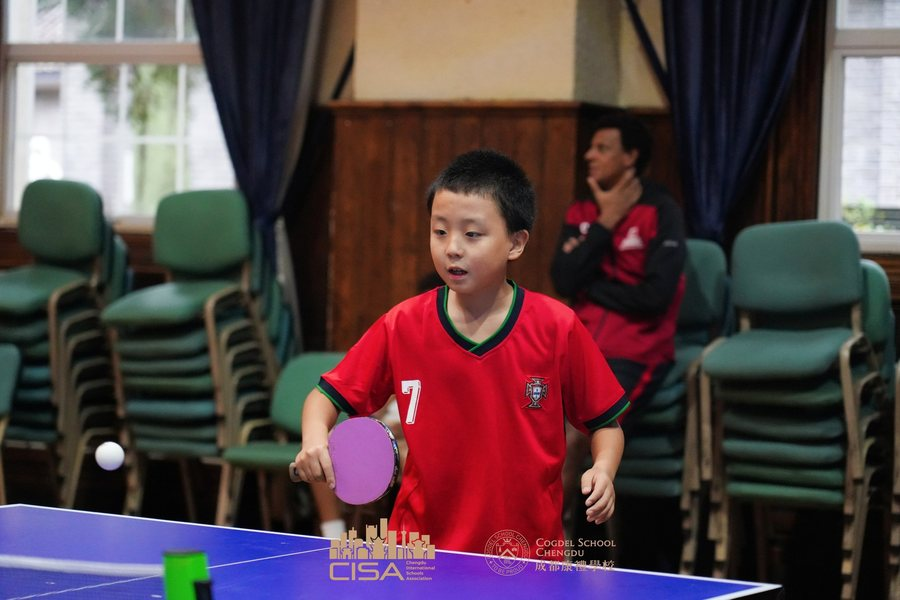
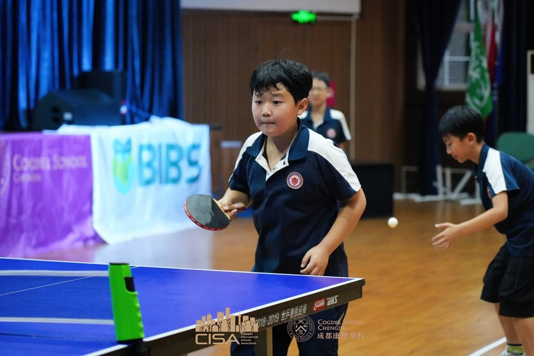
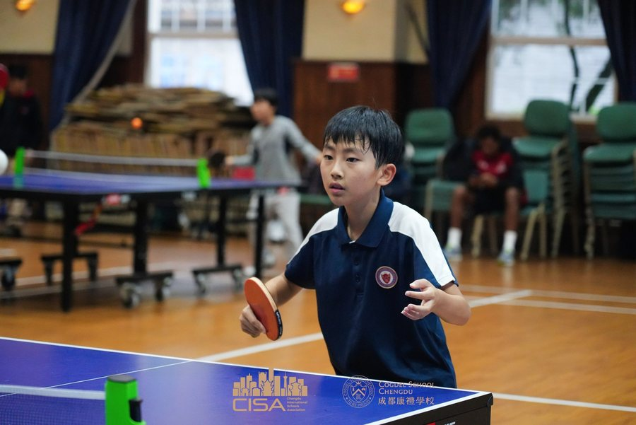
在CISA乒乓球比赛中，我看到孩子们的精彩表现，小小的乒乓球，藏着大大的热爱。他专注、勇敢，不畏惧对手，不因得失慌乱。无论输赢，这份投入和坚持都格外耀眼，一次次精彩的回球，尽显不服输的劲头。
如需了解火花计划与康礼的成长支持体系，或预约参观安仁古镇 5A 景区的民国文物校园，欢迎致电 400-803-6661，或关注微信公众号「成都市大邑康礼外国语学校」。